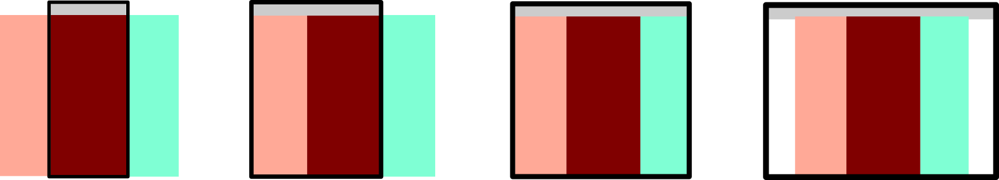
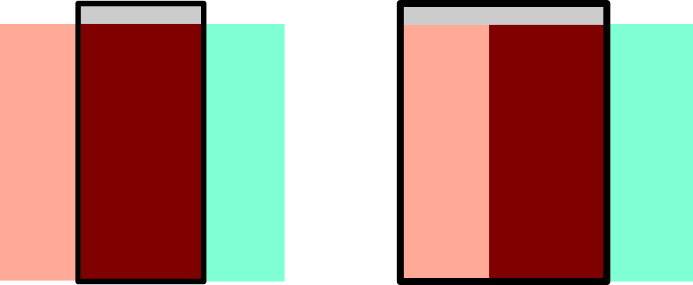
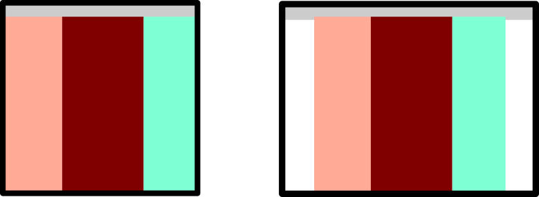

Off-Canvas
Definition
Das Off-Canvas-Layout ist eine fortschrittliche Technik im Bereich des responsiven Webdesigns, die dazu dient, den begrenzten Bildschirmplatz auf mobilen Geräten optimal zu nutzen. Im Wesentlichen handelt es sich dabei um eine Methode, bei der der Hauptinhalt außerhalb des sichtbaren Bereichs verschoben wird und nur bei Bedarf eingeblendet wird. Diese innovative Technik verbessert die Benutzerfreundlichkeit, indem sie es ermöglicht, zusätzlichen Inhalt oder Navigationselemente auf mobile Geräte zu übertragen, ohne den begrenzten Bildschirmraum zu überlasten. Der Fokus liegt auf einer effizienten Darstellung, wodurch Nutzer nahtlos zwischen verschiedenen Inhalten und Funktionen wechseln können, ohne von unnötigem Ballast beeinträchtigt zu werden.
   Grafikadresse: https://i.pinimg.com/originals/ff/73/38/ff733848090cda421f58c6d92052fa65.pngMobile First
"Mobile First" ist eine Designphilosophie im Webdesign, die darauf abzielt, Websites und Anwendungen zunächst für mobile Geräte zu optimieren und sie dann für größere Bildschirme anzupassen. Der Ansatz berücksichtigt die stetig wachsende Nutzung von Smartphones und Tablets und priorisiert die Entwicklung von Inhalten, Benutzeroberflächen und Funktionen für mobile Endgeräte. Indem man sich zuerst auf die kleineren Bildschirmgrößen konzentriert, wird eine bessere Benutzererfahrung für Mobilgeräte erreicht, bevor man die Anpassungen für größere Bildschirme vornimmt. Dies fördert Effizienz, Zugänglichkeit und responsives Design.
Vorteile
Platzersparnis: Off-Canvas-Layouts bieten eine effiziente Nutzung des begrenzten Bildschirmplatzes auf mobilen Geräten,
indem sekundäre Inhalte und Menüs ausgeblendet werden, wenn sie nicht benötigt werden.
Fokus auf Hauptinhalt: Die Technik ermöglicht es, den Fokus auf den Hauptinhalt zu legen, indem sekundäre Informationen
dezent im Hintergrund gehalten werden, bis der Benutzer darauf zugreifen möchte.
Bessere Benutzererfahrung: Durch das Ausblenden von Nebeninformationen wird die Benutzeroberfläche übersichtlicher,
was zu einer verbesserten Benutzererfahrung führt.
Geschwindigkeitsoptimierung: Da weniger Daten auf einmal geladen werden müssen, können Off-Canvas-Layouts dazu beitragen, die
Ladezeiten zu verbessern und somit die Performance der Website zu steigern.
Nachteile
Entdeckbarkeit: Einige Benutzer könnten Schwierigkeiten haben, versteckte Menüs oder Inhalte zu finden,
insbesondere wenn die Off-Canvas-Navigation nicht klar gekennzeichnet ist.
Komplexität der Umsetzung: Die Implementierung von Off-Canvas-Layouts erfordert zusätzlichen JavaScript-Code
und kann die Entwicklung komplexer machen.
Nicht für jede Art von Inhalt geeignet: In einigen Fällen, wie bei umfangreichen Navigationsstrukturen, ist ein traditionelles
Layout möglicherweise besser geeignet, um alle erforderlichen Informationen zugänglich zu machen.
Fazit
Off-Canvas-Layouts sind eine leistungsstarke Lösung, um den Herausforderungen des responsiven Webdesigns zu begegnen. Die Entscheidung für oder gegen diese Technik sollte jedoch sorgfältig abgewogen werden, indem die spezifischen Anforderungen der Website und die Bedürfnisse der Benutzer berücksichtigt werden.